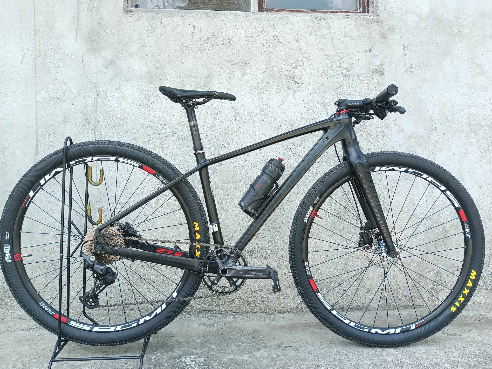

A bicycle, also called a pedal cycle, bike, push-bike or cycle, is a human-powered or motor-assisted, pedal-driven, single-track vehicle, with two wheels attached to a frame, one behind the other. A bicycle rider is called a cyclist, or bicyclist. Bicycles were introduced in the 19th century in Europe.